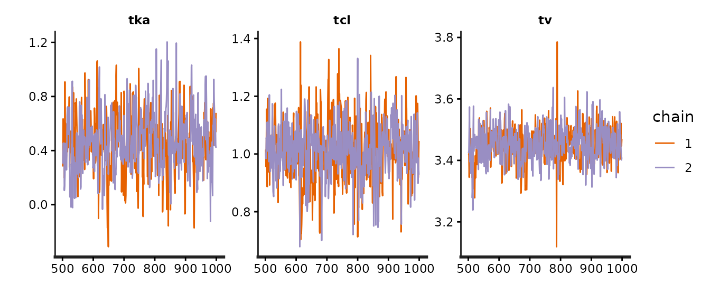
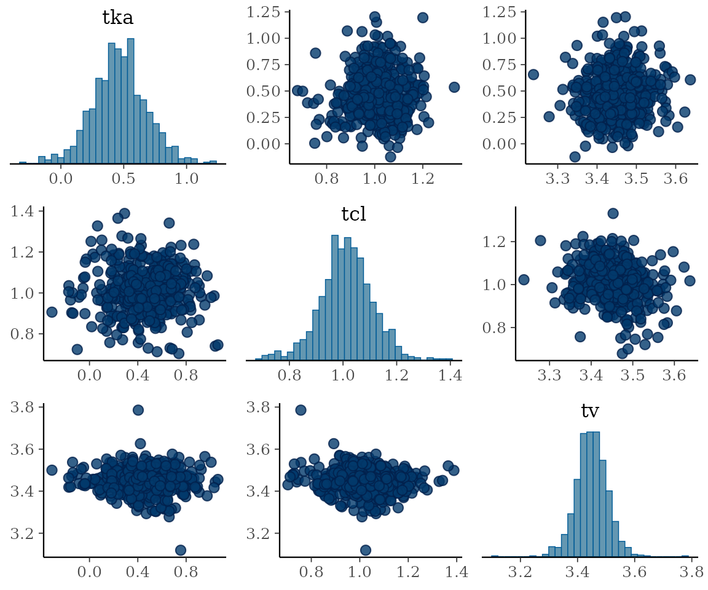

Automatic model generation: likelihood-level linking
nlmixr2bayes adds a Bayesian HMC estimation method to
nlmixr2 that automatically generates and compiles a Stan
program. You write the model once, in nlmixr2 syntax, declare
priors in the ini({}) block, and est = "nuts"
handles everything else: Stan program generation, compilation, linking,
and sampling. No Stan code to write – this vignette is
for you.
est = "nuts" names the ALGORITHM (Stan’s No-U-Turn HMC
sampler) rather than the software tool – it is sugar for
est = "stan" with NUTS, which is
stanControl()’s default anyway, so the two are equivalent
here.
When to use this approach
- You want Bayesian estimation of a complete nlmixr2 model
- You prefer automatic program generation over hand-coding Stan
- Your model fits the supported scope (ODE,
linCmt(), normal/censored errors, finite mixtures) - You want the same likelihood evaluated by every nlmixr2 method (FOCE, Stan, etc.)
When to use hand-coded Stan instead
If you want full control over your Stan program –
custom priors, derived quantities, multiple endpoints with mixed
structures, or a hierarchy the nlmixr2 ui cannot express – see
vignette("rxstan-handcoded", "nlmixr2bayes") for the rxstan
approach. Delay differential equations are not a reason to go
there: delay() and past() work through this
automatic path too (see
vignette("rxstan-dde", "nlmixr2bayes")).
Stan is linked to the compiled rxode2/nlmixr2est
likelihood rather than the model being translated into Stan’s language:
rxode2 solves the ODEs (dosing events, addl, infusions,
steady state), and nlmixr2est evaluates the same conditional likelihood
every other nlmixr2 method uses – one source of truth, with analytic
gradients handed to Stan through precomputed_gradients().
Stan samples theta, the omega parameters, and the individual etas
jointly; the eta prior is fully owned by Stan (non-centered by default),
so its autodiff composes the supplied gradients through the Omega
parameterization. A model with no etas (a
population-only or single-subject fit) runs as “tier 0” through
nlmixr2est’s nlm path instead – one external scalar carrying the whole
data log-likelihood with its analytic gradient.
Because Stan only ever sees the likelihood, anything rxode2 can solve
is in scope without the generator knowing about it – delay
differential equations included.
d/dt(R) <- kin - kout * delay(R, tau) is an ordinary
model here, with tau estimated like any other theta; rxode2
switches to a dense solver for it exactly as it does under FOCEi or
SAEM. Stan itself has no DDE solver at all, so this is a capability that
exists only because the model is linked rather than translated.
Beyond the core: finite mixtures (mix(), 2 components)
marginalize with the Stan log_sum_exp pattern and put
per-subject membership posteriors in fit$env$mixProb;
fixed-variance etas (eta ~ fix(v)) render as constant
Cholesky factors with the eta still sampled; and an estimated
transform-both-sides lambda (Box-Cox/Yeo-Johnson, including on
logitNorm/probitNorm bases) is handled with
the DV-transform Jacobian emitted Stan-side.
Priors come from ini({})
Priors are declared next to the parameters they describe, with the
lotri/rxode2 prior syntax – the distribution catalog is one-to-one with
Stan’s (lotri::lotriPriorDists()).
The model below is the standard one-compartment oral theophylline
model, with between-subject variability on ka,
cl and v and an additive residual error, plus
one prior() line per estimated parameter:
library(nlmixr2)
library(nlmixr2bayes)
one.cmt <- function() {
ini({
tka <- 0.45
tcl <- log(c(0, 2.7, 100))
tv <- 3.45
add.sd <- c(0, 0.7)
eta.ka ~ 0.6
eta.cl ~ 0.3
eta.v ~ 0.1
prior(tka) ~ dnorm(0.45, 1)
prior(tcl) ~ dnorm(1, 1)
prior(tv) ~ dnorm(3.45, 1)
prior(add.sd) ~ dcauchy(0, 2.5)
})
model({
ka <- exp(tka + eta.ka)
cl <- exp(tcl + eta.cl)
v <- exp(tv + eta.v)
linCmt() ~ add(add.sd)
})
}Fitting it is one call. The := here is nlmixr2save’s
caching assignment (see vignettes/cacheSetup.R): the first
render runs the sampler for real and writes the fit into
inst/cache, and every later render loads it back, so the
numbers on this page are the ones the code produced. Written with
<- instead, the line is an ordinary fit that runs every
time:
fit := nlmixr2est::nlmixr2(one.cmt, nlmixr2data::theo_sd, est = "nuts",
control = nutsControl(seed = 42, chains = 2,
iter = 1000))A short run (2 chains of 1000, half of them warmup) keeps this page quick to rebuild and its cached fit small; the defaults are 4 chains of 2000, which is what you want for a real analysis.
The result prints as an ordinary nlmixr2 fit, with the sampler’s headline diagnostics in the header and the posterior summarized in the usual parameter table:
print(fit)
#> ── nlmixr² Stan (HMC) (2 chains x 500 draws; max Rhat 1.004; min ESS 358; Wald
#> CI from posterior cov) ──
#>
#> OBJF AIC BIC Log-likelihood
#> FOCEi 127.77345 384.3732 404.5528 -185.1866
#> WAIC (subject-level) 68.96340 NA NA -34.4817
#> LOO (leave-one-subject-out) 80.38441 NA NA -40.1922
#> Condition#(Cov) Condition#(Cor)
#> FOCEi 16.28524 1.462288
#> WAIC (subject-level) NA NA
#> LOO (leave-one-subject-out) NA NA
#>
#> ── Time (sec $time): ──
#>
#> setup optimize covariance preprocess postprocess table compress
#> elapsed 0.07425366 3.6172e-05 2.151e-05 0.039 0.013 0.034 0.006
#>
#> ── Population Parameters ($parFixed or $parFixedDf): ──
#>
#> Est. SE %RSE Back-transformed(95%CI) BSV(CV%) Shrink(SD)%
#> tka 0.468 0.215 46.0 1.60 (1.05, 2.43) 97.3 18.3
#> tcl 1.01 0.0980 9.68 2.75 (2.27, 3.34) 32.9 19.7
#> tv 3.45 0.0561 1.63 31.5 (28.2, 35.1) 17.1 26.4
#> add.sd 0.707 0.0541 7.65 0.707 (0.601, 0.813)
#>
#> Covariance Type ($covMethod): stan.posterior
#> Fixed parameter correlations in $cor
#> No correlations in between subject variability (BSV) matrix
#> Full BSV covariance ($omega) or correlation ($omegaR; diagonals=SDs)
#> Distribution stats (mean/skewness/kurtosis/p-value) available in $shrink
#> Information about run found ($runInfo):
#> • Bulk Effective Samples Size (ESS) is too low, indicating posterior means and medians may be unreliable. Running the chains for more iterations may help. See https://mc-stan.org/misc/warnings.html#bulk-ess
#> Censoring ($censInformation): No censoring
#>
#> ── Fit Data (object is a modified tibble): ──
#> # A tibble: 132 × 18
#> ID TIME DV PRED RES IPRED IRES IWRES eta.ka eta.cl eta.v depot
#> <fct> <dbl> <dbl> <dbl> <dbl> <dbl> <dbl> <dbl> <dbl> <dbl> <dbl> <dbl>
#> 1 1 0 0.74 0 0.74 0 0.74 1.05 0.0875 -0.491 -0.0768 320.
#> 2 1 0.25 2.84 3.31 -0.465 3.84 -1.00 -1.42 0.0875 -0.491 -0.0768 207.
#> 3 1 0.57 6.57 5.90 0.670 6.78 -0.208 -0.294 0.0875 -0.491 -0.0768 119.
#> # ℹ 129 more rows
#> # ℹ 6 more variables: central <dbl>, ka <dbl>, cl <dbl>, v <dbl>, tad <dbl>,
#> # dosenum <int>Notes on how priors are handled:
- A parameter’s
ini()bounds become Stan constraints;add.sd <- c(0, 0.7)withprior(add.sd) ~ dcauchy(0, 2.5)is the half-Cauchy idiom (real<lower=0>+cauchy(0, 2.5)). - A prior whose support is narrower than the declared bounds tightens
the declaration (support promotion); truncation
T[L,U]is emitted only when the dropped normalizer would be parameter-dependent. - Omega blocks: write
prior(eta.x) ~ invWishart(nu)for an inverse-Wishart on the block, or leave the block without a prior to get the announced default –lkj_corr_cholesky(2)on the correlation plus half-Cauchy priors on each SD. - A model with no priors is refused, and the error
prints the exact
prior()lines to add. Bayesian output from silently invented priors would look publishable and be wrong. - Parameters that are
fix()ed are dissolved before generation (literalFix = TRUE); a prior on a fixed parameter is an error.
That refusal is worth seeing, because the error is also the fix – it
prints the prior() lines to paste back into
ini({}):
noPriors <- function() {
ini({
tka <- 0.45
tcl <- log(c(0, 2.7, 100))
tv <- 3.45
add.sd <- c(0, 0.7)
eta.ka ~ 0.6
eta.cl ~ 0.3
eta.v ~ 0.1
})
model({
ka <- exp(tka + eta.ka)
cl <- exp(tcl + eta.cl)
v <- exp(tv + eta.v)
linCmt() ~ add(add.sd)
})
}
nlmixr2est::nlmixr2(noPriors, nlmixr2data::theo_sd, est = "nuts")
#> Error:
#> ! est="stan" needs prior distributions in the ini({}) block and this model declares none; for example:
#> prior(tka) ~ dnorm(0.45, 10)
#> prior(tcl) ~ dnorm(0.993, 10)
#> prior(tv) ~ dnorm(3.45, 34.5)
#> prior(add.sd) ~ dcauchy(0, 3.5)
#> prior(eta.ka) ~ invWishart(6)Those suggested priors are derived from the model’s own
ini() values and bounds; they are a starting point to edit,
not a recommendation.
Controlling the run
stanControl() collects everything about the run. Calling
it on its own returns the control object, which is also how you can
check what a setting resolved to before spending an hour on a fit:
stanControl(
chains = 4, iter = 2000, warmup = 1000, seed = 42,
adapt_delta = 0.8, max_treedepth = 10, # Stan's own sampler defaults
init = "ini", # chains start at the ini() estimates (jittered)
etaParam = "noncentered", # or "centered"; both target the identical posterior
cores = 4, # subject-parallel threads INSIDE each evaluation
print = 100 # nlmixr2est-style iteration table cadence (0 = off)
)
#> $chains
#> [1] 4
#>
#> $iter
#> [1] 2000
#>
#> $algorithm
#> [1] "NUTS"
#>
#> $pathfinderPaths
#> [1] 4
#>
#> $vbIter
#> [1] 10000
#>
#> $vbTolRelObj
#> [1] 0.01
#>
#> $vbOutputSamples
#> [1] 1000
#>
#> $warmup
#> [1] 1000
#>
#> $thin
#> [1] 1
#>
#> $seed
#> [1] 42
#>
#> $init
#> [1] "ini"
#>
#> $initJitterSd
#> [1] 0.1
#>
#> $adapt_delta
#> [1] 0.8
#>
#> $max_treedepth
#> [1] 10
#>
#> $likelihood
#> [1] "focei"
#>
#> $etaParam
#> [1] "noncentered"
#>
#> $cores
#> [1] 4
#>
#> $print
#> [1] 100
#>
#> $maxOdeRecalc
#> [1] 3
#>
#> $fallbackFD
#> [1] TRUE
#>
#> $chainCores
#> [1] 2
#>
#> $diagOmegaSdPrior
#> [1] "cauchy(0, %s)"
#>
#> $lkjEta
#> [1] 2
#>
#> $point
#> [1] "mean"
#>
#> $ofv
#> [1] "focei"
#>
#> $rhatMax
#> [1] 1.01
#>
#> $essBulkMin
#> [1] 100
#>
#> $essTailMin
#> [1] 100
#>
#> $maxDivergent
#> [1] 0
#>
#> $onDiagnostic
#> [1] "warn"
#>
#> $run
#> [1] TRUE
#>
#> $cache
#> [1] TRUE
#>
#> $cacheDir
#> NULL
#>
#> $stanFile
#> NULL
#>
#> $verbose
#> [1] FALSE
#>
#> $sigdig
#> [1] 8
#>
#> $rxControl
#> $scale
#> NULL
#>
#> $method
#> [1] 0
#>
#> $atol
#> [1] 1e-08
#>
#> $rtol
#> [1] 1e-08
#>
#> $maxsteps
#> [1] 100000
#>
#> $hmin
#> [1] 0
#>
#> $hmax
#> NULL
#>
#> $hini
#> [1] 0
#>
#> $maxordn
#> [1] 12
#>
#> $maxords
#> [1] 5
#>
#> $covsInterpolation
#> locf
#> 1
#>
#> $addCov
#> [1] TRUE
#>
#> $returnType
#> rxSolve
#> 0
#>
#> $sigma
#> NULL
#>
#> $sigmaDf
#> NULL
#>
#> $nCoresRV
#> [1] 1
#>
#> $sigmaIsChol
#> [1] FALSE
#>
#> $sigmaSeparation
#> [1] "auto"
#>
#> $sigmaXform
#> identity
#> 4
#>
#> $nDisplayProgress
#> [1] 10000
#>
#> $amountUnits
#> [1] NA
#>
#> $timeUnits
#> [1] "hours"
#>
#> $addDosing
#> [1] FALSE
#>
#> $stateTrim
#> [1] Inf
#>
#> $updateObject
#> [1] FALSE
#>
#> $omega
#> NULL
#>
#> $omegaDf
#> NULL
#>
#> $omegaIsChol
#> [1] FALSE
#>
#> $omegaSeparation
#> [1] "auto"
#>
#> $omegaXform
#> variance
#> 6
#>
#> $nSub
#> [1] 1
#>
#> $thetaMat
#> NULL
#>
#> $thetaDf
#> NULL
#>
#> $thetaIsChol
#> [1] FALSE
#>
#> $nStud
#> [1] 1
#>
#> $dfSub
#> [1] 0
#>
#> $dfObs
#> [1] 0
#>
#> $seed
#> NULL
#>
#> $nsim
#> NULL
#>
#> $minSS
#> [1] 10
#>
#> $maxSS
#> [1] 10000
#>
#> $strictSS
#> [1] 1
#>
#> $infSSstep
#> [1] 12
#>
#> $istateReset
#> [1] TRUE
#>
#> $subsetNonmem
#> [1] TRUE
#>
#> $hmaxSd
#> [1] 0
#>
#> $maxAtolRtolFactor
#> [1] 0.1
#>
#> $from
#> NULL
#>
#> $to
#> NULL
#>
#> $by
#> NULL
#>
#> $length.out
#> NULL
#>
#> $iCov
#> NULL
#>
#> $keep
#> NULL
#>
#> $keepF
#> character(0)
#>
#> $drop
#> NULL
#>
#> $warnDrop
#> [1] TRUE
#>
#> $omegaLower
#> [1] -Inf
#>
#> $omegaUpper
#> [1] Inf
#>
#> $sigmaLower
#> [1] -Inf
#>
#> $sigmaUpper
#> [1] Inf
#>
#> $thetaLower
#> [1] -Inf
#>
#> $thetaUpper
#> [1] Inf
#>
#> $indLinPhiM
#> [1] 0
#>
#> $indLinPhiTol
#> [1] 1e-07
#>
#> $indLinMatExpType
#> Al-Mohy
#> 3
#>
#> $indLinMatExpOrder
#> [1] 6
#>
#> $idFactor
#> [1] TRUE
#>
#> $mxhnil
#> [1] 0
#>
#> $hmxi
#> [1] 0
#>
#> $warnIdSort
#> [1] TRUE
#>
#> $ssAtol
#> [1] 1e-08
#>
#> $ssRtol
#> [1] 1e-08
#>
#> $safeZero
#> [1] 1
#>
#> $sumType
#> pairwise
#> 1
#>
#> $prodType
#> long double
#> 1
#>
#> $resample
#> NULL
#>
#> $resampleID
#> [1] TRUE
#>
#> $maxwhile
#> [1] 100000
#>
#> $cores
#> [1] 0
#>
#> $atolSens
#> [1] 1e-08
#>
#> $rtolSens
#> [1] 1e-06
#>
#> $ssAtolSens
#> [1] 1e-08
#>
#> $ssRtolSens
#> [1] 1e-06
#>
#> $simVariability
#> [1] NA
#>
#> $nLlikAlloc
#> NULL
#>
#> $useStdPow
#> [1] 0
#>
#> $naTimeHandle
#> ignore
#> 1
#>
#> $addlKeepsCov
#> [1] FALSE
#>
#> $addlDropSs
#> [1] TRUE
#>
#> $ssAtDoseTime
#> [1] TRUE
#>
#> $ss2cancelAllPending
#> [1] FALSE
#>
#> $naInterpolation
#> locf
#> 1
#>
#> $keepInterpolation
#> na
#> 2
#>
#> $safeLog
#> [1] 1
#>
#> $safePow
#> [1] 1
#>
#> $ssSolved
#> [1] TRUE
#>
#> $linCmtSensType
#> auto
#> 100
#>
#> $linCmtSensH
#> [1] 1e-04
#>
#> $linCmtGillFtol
#> [1] 0
#>
#> $linCmtGillK
#> [1] 20
#>
#> $linCmtGillStep
#> [1] 4
#>
#> $linCmtGillRtol
#> [1] 1.490116e-08
#>
#> $linCmtShiErr
#> [1] 1.490116e-08
#>
#> $linCmtShiMax
#> [1] 20
#>
#> $linCmtScale
#> [1] 0 0 0 0 0 0 0
#>
#> $linCmtHcmt
#> [1] 1
#>
#> $linCmtHmeanI
#> geometric
#> 2
#>
#> $linCmtHmeanO
#> geometric
#> 2
#>
#> $linCmtSuspect
#> [1] 1e-06
#>
#> $linCmtForwardMax
#> [1] 2
#>
#> $indOwnAlloc
#> [1] -1
#>
#> $maxExtra
#> [1] 1000
#>
#> $tolFactor
#> NULL
#>
#> $serializeFile
#> NULL
#>
#> $dense
#> [1] TRUE
#>
#> $cvodeLinSolver
#> dense
#> 1
#>
#> $stiff2
#> [1] 13
#>
#> $autoSwitchMaxStiff
#> [1] 10
#>
#> $autoSwitchMaxNonstiff
#> [1] 3
#>
#> $autoSwitchStiffFirst
#> [1] 0
#>
#> $autoSwitchNonstifftol
#> [1] 0.9
#>
#> $autoSwitchStifftol
#> [1] 0.9
#>
#> $autoSwitchDtfac
#> [1] 2
#>
#> $autoSwitchSwitchMax
#> [1] 5
#>
#> $useLinCmt
#> [1] FALSE
#>
#> $file
#> NULL
#>
#> $chunkSize
#> NULL
#>
#> $parallel
#> [1] 0
#>
#> $.zeros
#> NULL
#>
#> $zeroVarParamHandle
#> [1] "warn"
#>
#> $indLinStepSearch
#> [1] 1
#>
#> $indLinMaxIter
#> [1] 20
#>
#> $indLinRichardson
#> [1] 2
#>
#> $indLinIteration
#> [1] 3
#>
#> $indLinJac
#> [1] 0
#>
#> $indLinForcing
#> [1] 1
#>
#> $usePrior
#> [1] NA
#>
#> $priorPdRetry
#> [1] 10
#>
#> $priorOmega
#> NULL
#>
#> $priorOmegaEl
#> NULL
#>
#> $priorSigmaEl
#> NULL
#>
#> $linCmtSensPhi
#> [1] 2
#>
#> $nonmem
#> [1] FALSE
#>
#> attr(,"class")
#> [1] "rxControl"
#>
#> $genRxControl
#> [1] TRUE
#>
#> $addProp
#> [1] "combined2"
#>
#> $sumProd
#> [1] FALSE
#>
#> $optExpression
#> [1] TRUE
#>
#> $literalFix
#> [1] TRUE
#>
#> $calcTables
#> [1] TRUE
#>
#> $compress
#> [1] TRUE
#>
#> $ci
#> [1] 0.95
#>
#> $sigdigTable
#> NULL
#>
#> attr(,"class")
#> [1] "stanControl"Parallelism has two axes. By default (unix) the chains run in FORKED
processes (chainCores, inheriting the
rxode2::getRxThreads() budget capped at the chain count):
each fork receives a copy-on-write duplicate of the linked likelihood,
and the draws are bit-identical to a sequential run. With
chainCores = 1 the chains run sequentially and each
likelihood evaluation is subject-parallel instead (cores,
default getRxThreads(); CRAN’s two-core policy is honored
automatically through OMP_THREAD_LIMIT). The ODE solving is
the rate-limiting step in most pharmacometric models, so that is where
the cores go either way.
With sequential chains (chainCores = 1), during sampling
the familiar nlmixr2est iteration table prints every
print-th log-density evaluation: the natural-scale thetas,
the current omega variances/covariances (om.<eta>,
cov.<eta1>.<eta2> – Stan samples omega, so
these move), and -2*sum(conditional log-lik). The printed
rows are recorded on the fit as $parHistData.
Other Stan inference algorithms: ADVI and Pathfinder
stanControl(algorithm=) selects the inference algorithm
that runs on the same generated program and the same linked
likelihood:
-
"NUTS"(default) – the No-U-Turn HMC sampler; full Bayes. -
"meanfield"– ADVI with independent Gaussians on the unconstrained scale (Stan’srstan::vb()). -
"fullrank"– ADVI with one full-covariance Gaussian. -
"pathfinder"– multi-path Pathfinder (Zhang, Carpenter, Gelman & Vehtari 2022), implemented in nlmixr2bayes against the compiled model’s exact log density and analytic gradient (rstan does not expose the Pathfinder service): L-BFGS trajectories from jittered starts, an ELBO-selected local Gaussian per path, and Pareto-smoothed importance resampling over the path mixture. Needs theloopackage.
Each has a sugar est= name – these select the ALGORITHM
instead of the software tool, the way
"foce"/"focei" do in nlmixr2est:
fitAdvi := nlmixr2est::nlmixr2(one.cmt, nlmixr2data::theo_sd, est = "advi",
control = adviControl(seed = 42))
fitPf := nlmixr2est::nlmixr2(one.cmt, nlmixr2data::theo_sd, est = "pathfinder",
control = pathfinderControl(seed = 42))Each sugar method has its own control – nutsControl(),
adviControl(), pathfinderControl() – which is
stanControl() with that algorithm forced and everything
else unchanged. Passing one is the est=, the same
way foceControl() implies est="foce" in
nlmixr2est, so these two lines are the same fit:
nlmixr2est::nlmixr2(one.cmt, nlmixr2data::theo_sd, est = "advi",
control = adviControl(seed = 42))
nlmixr2est::nlmixr2(one.cmt, nlmixr2data::theo_sd, adviControl(seed = 42))A contradiction is an error rather than a silent override, and the message names the call that would have meant it:
adviControl(algorithm = "pathfinder")
#> Error:
#> ! est="advi" runs ADVI; use stanControl(algorithm="pathfinder") with est="stan" insteadThe fit also reports back the control you wrote –
fit$control on the NUTS fit is a nutsControl,
not a bare stanControl:
Everything downstream is identical – the variational draws flow
through the same posterior-to-fit machinery, so $parFixed,
$etaObf, $omega,
$posteriorSummary, WAIC/LOO and the iteration print all
work. Lining the three algorithms up on the same model shows both halves
of the trade: the population parameters agree closely, and the run times
do not.
cbind(NUTS = fit$parFixedDf$Estimate,
ADVI = fitAdvi$parFixedDf$Estimate,
Pathfinder = fitPf$parFixedDf$Estimate) |>
`rownames<-`(rownames(fit$parFixedDf)) |>
round(3)
#> NUTS ADVI Pathfinder
#> tka 0.468 0.429 0.244
#> tcl 1.013 1.017 1.054
#> tv 3.450 3.438 3.415
#> add.sd 0.707 0.775 0.652But ADVI is an approximation: it understates tails and
posterior correlations. The
Pareto-
diagnostic of the importance ratios replaces Rhat/ESS/divergences on
those fits ($stanDiagnostics$khat, also shown in the fit
header):
means the approximation supports importance correction; above that the
fit warns (via onDiagnostic) that the approximation is
unreliable and NUTS should be used.
fitAdvi$stanDiagnostics$khat
#> [1] 1.180255
fitPf$stanDiagnostics$khat
#> [1] 2.15124Hierarchical PK posteriors routinely exceed that threshold – treat ADVI and Pathfinder as the fast first look and NUTS as the answer.
run = FALSE returns the generated Stan program and data
without touching rstan – useful for inspection and for codegen tests.
This is the program the fit above actually sampled:
code <- nlmixr2est::nlmixr2(one.cmt, nlmixr2data::theo_sd, est = "nuts",
control = stanControl(run = FALSE))
#> ℹ parameter labels from comments are typically ignored in non-interactive mode
#> ℹ Need to run with the source intact to parse comments
#> est="stan": default prior sd_eta_ka ~ cauchy(0, 1.93649167310371) on omega
#> diagonal 'eta.ka'
#> est="stan": default prior sd_eta_cl ~ cauchy(0, 1.36930639376292) on omega
#> diagonal 'eta.cl'
#> est="stan": default prior sd_eta_v ~ cauchy(0, 0.790569415042095) on omega
#> diagonal 'eta.v'
cat(code$code)
#> functions {
#> // external (allow_undefined): value + analytic d/d(eta) and
#> // d/d(theta) supplied by the linked rxode2/nlmixr2est likelihood
#> vector nlmixr2_cond_all2(matrix etaMat, vector theta);
#> // external iteration tick: nlmixr2est-style iteration print;
#> // returns 0 and contributes nothing to the target
#> real nlmixr2_iter_tick(vector par, real objf);
#> }
#> data {
#> int<lower=1> N;
#> }
#> parameters {
#> real tka;
#> real<upper=4.60517018598809> tcl;
#> real tv;
#> real<lower=0> add_sd;
#> real<lower=0> sd_eta_ka;
#> matrix[N, 1] z_eta_ka;
#> real<lower=0> sd_eta_cl;
#> matrix[N, 1] z_eta_cl;
#> real<lower=0> sd_eta_v;
#> matrix[N, 1] z_eta_v;
#> }
#> transformed parameters {
#> matrix[N, 3] eta;
#> vector[4] theta;
#> theta[1] = tka;
#> theta[2] = tcl;
#> theta[3] = tv;
#> theta[4] = add_sd;
#> matrix[1,1] L_eta_ka = [[sd_eta_ka]];
#> eta[, 1:1] = z_eta_ka * L_eta_ka';
#> matrix[1,1] L_eta_cl = [[sd_eta_cl]];
#> eta[, 2:2] = z_eta_cl * L_eta_cl';
#> matrix[1,1] L_eta_v = [[sd_eta_v]];
#> eta[, 3:3] = z_eta_v * L_eta_v';
#> }
#> model {
#> // priors from ini({}); Stan owns the FULL, normalized eta prior --
#> // the external function returns the CONDITIONAL log p(y_i|eta_i)
#> tka ~ normal(0.45, 1);
#> tcl ~ normal(1, 1);
#> tv ~ normal(3.45, 1);
#> add_sd ~ cauchy(0, 2.5);
#> sd_eta_ka ~ cauchy(0, 1.93649167310371);
#> to_vector(z_eta_ka) ~ std_normal();
#> sd_eta_cl ~ cauchy(0, 1.36930639376292);
#> to_vector(z_eta_cl) ~ std_normal();
#> sd_eta_v ~ cauchy(0, 0.790569415042095);
#> to_vector(z_eta_v) ~ std_normal();
#> if (max(abs(col(eta, 1))) > 77.4596669241483 || max(abs(col(eta, 2))) > 54.7722557505166 || max(abs(col(eta, 3))) > 31.6227766016838) {
#> // far outside the eta prior: reject without calling the external
#> // likelihood, whose solve can run without bound at such a point
#> target += negative_infinity();
#> } else {
#> {
#> vector[N] llCond = nlmixr2_cond_all2(eta, theta);
#> real sumLL = sum(llCond);
#> target += sumLL;
#> vector[8] parDisp;
#> matrix[1,1] Od_eta_ka = L_eta_ka * L_eta_ka';
#> parDisp[5] = Od_eta_ka[1,1];
#> matrix[1,1] Od_eta_cl = L_eta_cl * L_eta_cl';
#> parDisp[6] = Od_eta_cl[1,1];
#> matrix[1,1] Od_eta_v = L_eta_v * L_eta_v';
#> parDisp[7] = Od_eta_v[1,1];
#> parDisp[8] = 0;
#> parDisp[1:4] = theta;
#> real iterDummy = nlmixr2_iter_tick(parDisp, -2 * sumLL);
#> }
#> }
#> }
#> generated quantities {
#> matrix[3,3] omegaOut = rep_matrix(0, 3,3);
#> vector[N] logLikSubj;
#> omegaOut[1:1, 1:1] = L_eta_ka * L_eta_ka';
#> omegaOut[2:2, 2:2] = L_eta_cl * L_eta_cl';
#> omegaOut[3:3, 3:3] = L_eta_v * L_eta_v';
#> logLikSubj = nlmixr2_cond_all2(eta, theta);
#> }Past nlmixr2’s usual model-parse notes, the messages above the
program are the announced omega defaults: this model leaves its three
eta blocks without a prior(), so each diagonal gets a
half-Cauchy scaled from its ini() variance, and a
correlated block would also get lkj_corr_cholesky(2). They
are printed rather than assumed silently, for the same reason a model
with no priors at all is refused.
Two things to notice in it. The functions{} block
declares nlmixr2_cond_all2() – the external hook Stan calls
for the conditional log-likelihood and its analytic gradient – and
nothing about the ODE system appears anywhere, because rxode2 owns that.
And the declared parameter names read like the model (tka,
add_sd, sd_eta_ka), not like an anonymous
translation of it.
Reading the fit
The result is a first-class nlmixr2FitData:
print(fit), fit$parFixed, IPRED/CWRES tables,
plot(fit) all work. On top of that:
-
fit$posteriorSummary– exact posterior quantiles for every monitored parameter. The$parFixedconfidence intervals are a Wald (Gaussian) approximation built from the posterior covariance; for skewed posteriors (SDs, small omegas) prefer the exact quantiles here.
fit$posteriorSummary
#> mean se_mean sd 2.5% 25%
#> tka 0.46755535 0.011371885 0.21526624 0.046822296 0.33077578
#> tcl 1.01271028 0.004645314 0.09798704 0.814052429 0.95625566
#> tv 3.44959302 0.002917740 0.05608841 3.340208112 3.41538751
#> add.sd 0.70723760 0.002330129 0.05411321 0.613760144 0.66974275
#> om.eta.ka 0.66661854 0.020665735 0.44674777 0.230032899 0.37191289
#> om.eta.cl 0.10273792 0.002780841 0.06310585 0.033895087 0.06146497
#> om.eta.v 0.02893302 0.001116761 0.02270939 0.006109435 0.01465171
#> lp__ -39.23732111 0.595030189 7.04990327 -54.369500592 -43.86352049
#> 50% 75% 97.5% n_eff Rhat
#> tka 0.46633685 0.59306071 0.91142706 358.3331 1.004070
#> tcl 1.01175880 1.07267449 1.20030746 444.9459 0.998386
#> tv 3.45012424 3.48572436 3.56093429 369.5329 1.003385
#> add.sd 0.70139576 0.73924397 0.82928136 539.3203 1.001971
#> om.eta.ka 0.55613891 0.80097950 1.74344559 467.3294 1.004343
#> om.eta.cl 0.08758986 0.12443685 0.25139048 514.9760 1.002089
#> om.eta.v 0.02297003 0.03690039 0.07805458 413.5139 1.000431
#> lp__ -38.89683261 -34.06871379 -26.70285936 140.3745 1.015538The om.<eta> rows are the omega variances on their
natural scale, and cov.<eta1>.<eta2> rows
(absent here – this model has no correlated block) would carry the
covariances. Compare the 2.5%/97.5% columns
for om.eta.ka with the symmetric Wald interval in
$parFixed to see why the exact quantiles are the ones to
quote for a variance.
-
fit$etaObf– posterior-mean etas (withOBJI= -2 x mean conditional log-likelihood per subject). The FOCEi empirical Bayes estimates computed for the comparability row are kept asfit$etaObfFocei.
head(fit$etaObf)
#> ID eta.ka eta.cl eta.v OBJI
#> 1 1 0.08754559 -0.49060552 -0.0768343116 4.1906411
#> 2 2 0.20405086 0.14703870 0.0203219576 13.3394842
#> 3 3 0.39443629 0.01877507 0.0684249428 -4.0431579
#> 4 4 -0.28056484 -0.02293525 -0.0004203276 6.6090264
#> 5 5 -0.04166425 -0.15682846 -0.1302004251 22.5463603
#> 6 6 -0.39868819 0.37536387 0.2015689467 0.5132989Working with the rstan object
The full rstan::stanfit is kept on the fit and retrieved
with
sf <- fit$stanfit # the rstan::stanfit (also fit$env$stanfit)
sf
#> Inference for Stan model: nlmixr2bayes.
#> 2 chains, each with iter=1000; warmup=500; thin=1;
#> post-warmup draws per chain=500, total post-warmup draws=1000.
#>
#> mean se_mean sd 2.5% 25% 50% 75% 97.5% n_eff
#> tka 0.47 0.01 0.22 0.05 0.33 0.47 0.59 0.91 358
#> tcl 1.01 0.00 0.10 0.81 0.96 1.01 1.07 1.20 445
#> tv 3.45 0.00 0.06 3.34 3.42 3.45 3.49 3.56 370
#> add_sd 0.71 0.00 0.05 0.61 0.67 0.70 0.74 0.83 539
#> sd_eta_ka 0.78 0.01 0.23 0.48 0.61 0.75 0.89 1.32 430
#> z_eta_ka[1,1] 0.12 0.02 0.34 -0.52 -0.10 0.11 0.35 0.79 426
#> z_eta_ka[2,1] 0.28 0.02 0.35 -0.39 0.04 0.28 0.50 1.00 462
#> z_eta_ka[3,1] 0.54 0.02 0.39 -0.17 0.26 0.52 0.81 1.34 443
#> z_eta_ka[4,1] -0.38 0.02 0.35 -1.07 -0.61 -0.37 -0.14 0.29 401
#> z_eta_ka[5,1] -0.05 0.02 0.33 -0.73 -0.26 -0.05 0.15 0.58 416
#> z_eta_ka[6,1] -0.54 0.02 0.41 -1.32 -0.80 -0.52 -0.26 0.28 408
#> z_eta_ka[7,1] -1.09 0.02 0.44 -2.07 -1.35 -1.06 -0.79 -0.32 481
#> z_eta_ka[8,1] -0.23 0.02 0.37 -0.97 -0.46 -0.22 0.01 0.43 497
#> z_eta_ka[9,1] 2.04 0.03 0.61 0.96 1.61 2.00 2.43 3.36 472
#> z_eta_ka[10,1] -1.01 0.02 0.41 -1.84 -1.27 -0.99 -0.72 -0.23 430
#> z_eta_ka[11,1] 1.07 0.02 0.46 0.25 0.76 1.05 1.37 2.03 458
#> z_eta_ka[12,1] -0.72 0.02 0.37 -1.46 -0.97 -0.72 -0.46 -0.03 397
#> sd_eta_cl 0.31 0.00 0.09 0.18 0.25 0.30 0.35 0.50 494
#> z_eta_cl[1,1] -1.67 0.02 0.57 -2.92 -2.00 -1.64 -1.26 -0.68 651
#> z_eta_cl[2,1] 0.50 0.02 0.46 -0.37 0.19 0.49 0.80 1.37 709
#> z_eta_cl[3,1] 0.07 0.02 0.46 -0.81 -0.25 0.05 0.40 0.97 682
#> z_eta_cl[4,1] -0.07 0.02 0.47 -1.06 -0.39 -0.08 0.26 0.88 640
#> z_eta_cl[5,1] -0.53 0.02 0.44 -1.35 -0.82 -0.52 -0.24 0.27 638
#> z_eta_cl[6,1] 1.26 0.02 0.56 0.16 0.88 1.24 1.61 2.46 675
#> z_eta_cl[7,1] 0.51 0.02 0.49 -0.41 0.17 0.49 0.83 1.52 721
#> z_eta_cl[8,1] 0.57 0.02 0.50 -0.44 0.25 0.56 0.89 1.60 700
#> z_eta_cl[9,1] 0.13 0.02 0.48 -0.82 -0.19 0.14 0.44 1.07 703
#> z_eta_cl[10,1] -1.32 0.02 0.52 -2.43 -1.66 -1.29 -0.97 -0.36 487
#> z_eta_cl[11,1] 0.96 0.02 0.51 -0.03 0.60 0.94 1.29 1.96 700
#> z_eta_cl[12,1] -0.42 0.02 0.43 -1.35 -0.70 -0.41 -0.12 0.39 656
#> sd_eta_v 0.16 0.00 0.06 0.08 0.12 0.15 0.19 0.28 435
#> z_eta_v[1,1] -0.51 0.02 0.49 -1.49 -0.83 -0.50 -0.17 0.45 447
#> z_eta_v[2,1] 0.14 0.02 0.56 -1.00 -0.23 0.13 0.51 1.26 764
#> z_eta_v[3,1] 0.46 0.02 0.55 -0.58 0.09 0.44 0.81 1.61 837
#> z_eta_v[4,1] 0.00 0.02 0.56 -1.04 -0.36 0.01 0.37 1.09 710
#> z_eta_v[5,1] -0.87 0.02 0.50 -1.92 -1.18 -0.85 -0.54 0.09 629
#> z_eta_v[6,1] 1.29 0.02 0.70 -0.16 0.82 1.30 1.76 2.58 936
#> z_eta_v[7,1] 0.35 0.02 0.64 -0.94 -0.07 0.38 0.78 1.60 902
#> z_eta_v[8,1] 0.70 0.02 0.62 -0.48 0.28 0.69 1.09 1.91 975
#> z_eta_v[9,1] 0.12 0.02 0.49 -0.79 -0.21 0.10 0.43 1.13 657
#> z_eta_v[10,1] -1.08 0.02 0.60 -2.30 -1.49 -1.02 -0.66 -0.04 698
#> z_eta_v[11,1] 1.05 0.02 0.57 -0.03 0.65 0.98 1.42 2.28 765
#> z_eta_v[12,1] -1.28 0.02 0.60 -2.55 -1.66 -1.25 -0.86 -0.22 620
#> eta[1,1] 0.09 0.01 0.26 -0.45 -0.07 0.08 0.26 0.61 433
#> eta[1,2] -0.49 0.01 0.15 -0.81 -0.58 -0.48 -0.38 -0.21 720
#> eta[1,3] -0.08 0.00 0.07 -0.22 -0.13 -0.08 -0.03 0.06 446
#> eta[2,1] 0.20 0.01 0.26 -0.29 0.03 0.20 0.38 0.74 440
#> eta[2,2] 0.15 0.01 0.14 -0.12 0.05 0.14 0.23 0.44 711
#> eta[2,3] 0.02 0.00 0.08 -0.15 -0.03 0.02 0.08 0.18 707
#> eta[3,1] 0.39 0.01 0.27 -0.14 0.21 0.38 0.57 0.96 432
#> eta[3,2] 0.02 0.01 0.14 -0.24 -0.08 0.01 0.11 0.31 675
#> eta[3,3] 0.07 0.00 0.08 -0.09 0.01 0.07 0.12 0.23 769
#> eta[4,1] -0.28 0.01 0.26 -0.76 -0.45 -0.28 -0.11 0.22 429
#> eta[4,2] -0.02 0.01 0.14 -0.30 -0.11 -0.03 0.07 0.25 672
#> eta[4,3] 0.00 0.00 0.09 -0.16 -0.06 0.00 0.05 0.16 802
#> eta[5,1] -0.04 0.01 0.25 -0.56 -0.18 -0.03 0.12 0.44 404
#> eta[5,2] -0.16 0.00 0.13 -0.43 -0.24 -0.15 -0.07 0.09 675
#> eta[5,3] -0.13 0.00 0.07 -0.28 -0.18 -0.13 -0.08 0.02 481
#> eta[6,1] -0.40 0.01 0.30 -1.00 -0.59 -0.41 -0.19 0.18 441
#> eta[6,2] 0.38 0.01 0.16 0.04 0.27 0.37 0.48 0.72 712
#> eta[6,3] 0.20 0.00 0.12 -0.02 0.12 0.20 0.28 0.43 739
#> eta[7,1] -0.80 0.01 0.28 -1.36 -0.99 -0.80 -0.61 -0.30 545
#> eta[7,2] 0.15 0.01 0.14 -0.12 0.05 0.15 0.24 0.45 729
#> eta[7,3] 0.05 0.00 0.10 -0.16 -0.01 0.05 0.12 0.25 807
#> eta[8,1] -0.17 0.01 0.27 -0.74 -0.34 -0.17 0.01 0.37 478
#> eta[8,2] 0.17 0.01 0.15 -0.14 0.07 0.17 0.26 0.46 712
#> eta[8,3] 0.11 0.00 0.10 -0.07 0.04 0.11 0.17 0.30 886
#> eta[9,1] 1.53 0.02 0.45 0.80 1.23 1.47 1.75 2.63 526
#> eta[9,2] 0.04 0.01 0.15 -0.26 -0.06 0.04 0.13 0.31 628
#> eta[9,3] 0.02 0.00 0.07 -0.11 -0.03 0.02 0.07 0.16 547
#> eta[10,1] -0.74 0.01 0.27 -1.24 -0.92 -0.74 -0.56 -0.19 484
#> eta[10,2] -0.39 0.01 0.14 -0.68 -0.48 -0.39 -0.29 -0.12 573
#> eta[10,3] -0.16 0.00 0.09 -0.36 -0.23 -0.16 -0.10 0.00 700
#> eta[11,1] 0.78 0.01 0.29 0.23 0.60 0.77 0.98 1.39 496
#> eta[11,2] 0.28 0.01 0.15 -0.01 0.18 0.29 0.37 0.59 719
#> eta[11,3] 0.16 0.00 0.08 0.00 0.10 0.15 0.21 0.32 890
#> eta[12,1] -0.53 0.01 0.26 -1.07 -0.69 -0.53 -0.36 -0.02 431
#> eta[12,2] -0.13 0.00 0.13 -0.38 -0.21 -0.12 -0.04 0.11 657
#> eta[12,3] -0.19 0.00 0.09 -0.38 -0.25 -0.19 -0.13 -0.03 559
#> theta[1] 0.47 0.01 0.22 0.05 0.33 0.47 0.59 0.91 358
#> theta[2] 1.01 0.00 0.10 0.81 0.96 1.01 1.07 1.20 445
#> theta[3] 3.45 0.00 0.06 3.34 3.42 3.45 3.49 3.56 370
#> theta[4] 0.71 0.00 0.05 0.61 0.67 0.70 0.74 0.83 539
#> L_eta_ka[1,1] 0.78 0.01 0.23 0.48 0.61 0.75 0.89 1.32 430
#> L_eta_cl[1,1] 0.31 0.00 0.09 0.18 0.25 0.30 0.35 0.50 494
#> L_eta_v[1,1] 0.16 0.00 0.06 0.08 0.12 0.15 0.19 0.28 435
#> omegaOut[1,1] 0.67 0.02 0.45 0.23 0.37 0.56 0.80 1.74 467
#> omegaOut[1,2] 0.00 NaN 0.00 0.00 0.00 0.00 0.00 0.00 NaN
#> omegaOut[1,3] 0.00 NaN 0.00 0.00 0.00 0.00 0.00 0.00 NaN
#> omegaOut[2,1] 0.00 NaN 0.00 0.00 0.00 0.00 0.00 0.00 NaN
#> omegaOut[2,2] 0.10 0.00 0.06 0.03 0.06 0.09 0.12 0.25 515
#> omegaOut[2,3] 0.00 NaN 0.00 0.00 0.00 0.00 0.00 0.00 NaN
#> omegaOut[3,1] 0.00 NaN 0.00 0.00 0.00 0.00 0.00 0.00 NaN
#> omegaOut[3,2] 0.00 NaN 0.00 0.00 0.00 0.00 0.00 0.00 NaN
#> omegaOut[3,3] 0.03 0.00 0.02 0.01 0.01 0.02 0.04 0.08 414
#> logLikSubj[1] -2.10 0.07 1.38 -5.76 -2.66 -1.72 -1.10 -0.51 432
#> logLikSubj[2] -6.67 0.05 1.23 -9.61 -7.31 -6.46 -5.76 -4.95 562
#> logLikSubj[3] 2.02 0.06 1.33 -1.07 1.28 2.19 2.94 4.10 493
#> logLikSubj[4] -3.30 0.05 1.10 -6.03 -3.86 -3.01 -2.51 -2.06 511
#> logLikSubj[5] -11.27 0.06 1.65 -15.13 -12.23 -11.09 -10.12 -8.65 785
#> logLikSubj[6] -0.26 0.05 1.32 -3.60 -0.94 0.01 0.67 1.61 698
#> logLikSubj[7] 1.58 0.06 1.22 -1.14 0.87 1.76 2.45 3.54 414
#> logLikSubj[8] -1.29 0.06 1.18 -4.34 -1.77 -1.02 -0.50 0.16 361
#> logLikSubj[9] -0.23 0.06 1.33 -3.52 -0.94 0.05 0.73 1.54 534
#> logLikSubj[10] 0.87 0.06 1.48 -2.94 0.12 1.11 1.94 2.99 536
#> logLikSubj[11] 1.85 0.07 1.55 -1.79 1.04 2.13 2.88 4.10 493
#> logLikSubj[12] -0.82 0.08 1.51 -4.36 -1.63 -0.45 0.27 1.19 390
#> lp__ -39.24 0.60 7.05 -54.37 -43.86 -38.90 -34.07 -26.70 140
#> Rhat
#> tka 1.00
#> tcl 1.00
#> tv 1.00
#> add_sd 1.00
#> sd_eta_ka 1.00
#> z_eta_ka[1,1] 1.01
#> z_eta_ka[2,1] 1.00
#> z_eta_ka[3,1] 1.01
#> z_eta_ka[4,1] 1.00
#> z_eta_ka[5,1] 1.00
#> z_eta_ka[6,1] 1.01
#> z_eta_ka[7,1] 1.00
#> z_eta_ka[8,1] 1.00
#> z_eta_ka[9,1] 1.00
#> z_eta_ka[10,1] 1.00
#> z_eta_ka[11,1] 1.00
#> z_eta_ka[12,1] 1.00
#> sd_eta_cl 1.00
#> z_eta_cl[1,1] 1.00
#> z_eta_cl[2,1] 1.00
#> z_eta_cl[3,1] 1.00
#> z_eta_cl[4,1] 1.00
#> z_eta_cl[5,1] 1.00
#> z_eta_cl[6,1] 1.00
#> z_eta_cl[7,1] 1.00
#> z_eta_cl[8,1] 1.00
#> z_eta_cl[9,1] 1.00
#> z_eta_cl[10,1] 1.00
#> z_eta_cl[11,1] 1.00
#> z_eta_cl[12,1] 1.00
#> sd_eta_v 1.00
#> z_eta_v[1,1] 1.00
#> z_eta_v[2,1] 1.00
#> z_eta_v[3,1] 1.00
#> z_eta_v[4,1] 1.00
#> z_eta_v[5,1] 1.00
#> z_eta_v[6,1] 1.01
#> z_eta_v[7,1] 1.00
#> z_eta_v[8,1] 1.00
#> z_eta_v[9,1] 1.00
#> z_eta_v[10,1] 1.00
#> z_eta_v[11,1] 1.00
#> z_eta_v[12,1] 1.00
#> eta[1,1] 1.01
#> eta[1,2] 1.00
#> eta[1,3] 1.00
#> eta[2,1] 1.00
#> eta[2,2] 1.00
#> eta[2,3] 1.00
#> eta[3,1] 1.01
#> eta[3,2] 1.00
#> eta[3,3] 1.00
#> eta[4,1] 1.00
#> eta[4,2] 1.00
#> eta[4,3] 1.00
#> eta[5,1] 1.01
#> eta[5,2] 1.00
#> eta[5,3] 1.00
#> eta[6,1] 1.01
#> eta[6,2] 1.00
#> eta[6,3] 1.01
#> eta[7,1] 1.01
#> eta[7,2] 1.00
#> eta[7,3] 1.00
#> eta[8,1] 1.00
#> eta[8,2] 1.00
#> eta[8,3] 1.00
#> eta[9,1] 1.00
#> eta[9,2] 1.00
#> eta[9,3] 1.00
#> eta[10,1] 1.00
#> eta[10,2] 1.00
#> eta[10,3] 1.00
#> eta[11,1] 1.00
#> eta[11,2] 1.00
#> eta[11,3] 1.00
#> eta[12,1] 1.00
#> eta[12,2] 1.00
#> eta[12,3] 1.00
#> theta[1] 1.00
#> theta[2] 1.00
#> theta[3] 1.00
#> theta[4] 1.00
#> L_eta_ka[1,1] 1.00
#> L_eta_cl[1,1] 1.00
#> L_eta_v[1,1] 1.00
#> omegaOut[1,1] 1.00
#> omegaOut[1,2] NaN
#> omegaOut[1,3] NaN
#> omegaOut[2,1] NaN
#> omegaOut[2,2] 1.00
#> omegaOut[2,3] NaN
#> omegaOut[3,1] NaN
#> omegaOut[3,2] NaN
#> omegaOut[3,3] 1.00
#> logLikSubj[1] 1.00
#> logLikSubj[2] 1.00
#> logLikSubj[3] 1.01
#> logLikSubj[4] 1.00
#> logLikSubj[5] 1.00
#> logLikSubj[6] 1.00
#> logLikSubj[7] 1.00
#> logLikSubj[8] 1.00
#> logLikSubj[9] 1.00
#> logLikSubj[10] 1.00
#> logLikSubj[11] 1.00
#> logLikSubj[12] 1.00
#> lp__ 1.02
#>
#> Samples were drawn using NUTS(diag_e) at Mon Sep 21 12:47:50 2026.
#> For each parameter, n_eff is a crude measure of effective sample size,
#> and Rhat is the potential scale reduction factor on split chains (at
#> convergence, Rhat=1).Everything in the rstan/Bayesian ecosystem works from there.
rstan::summary() gives the full table including the
per-subject eta rows the nlmixr2 summary folds away:
head(rstan::summary(sf)$summary)
#> mean se_mean sd 2.5% 25% 50%
#> tka 0.4675554 0.011371885 0.21526624 0.0468223 0.3307758 0.4663368
#> tcl 1.0127103 0.004645314 0.09798704 0.8140524 0.9562557 1.0117588
#> tv 3.4495930 0.002917740 0.05608841 3.3402081 3.4153875 3.4501242
#> add_sd 0.7072376 0.002330129 0.05411321 0.6137601 0.6697427 0.7013958
#> sd_eta_ka 0.7832511 0.011121063 0.23062841 0.4796173 0.6098466 0.7457472
#> z_eta_ka[1,1] 0.1237461 0.016656334 0.34366334 -0.5217137 -0.1046101 0.1095780
#> 75% 97.5% n_eff Rhat
#> tka 0.5930607 0.9114271 358.3331 1.004070
#> tcl 1.0726745 1.2003075 444.9459 0.998386
#> tv 3.4857244 3.5609343 369.5329 1.003385
#> add_sd 0.7392440 0.8292814 539.3203 1.001971
#> sd_eta_ka 0.8949656 1.3203929 430.0639 1.003316
#> z_eta_ka[1,1] 0.3471023 0.7864802 425.7038 1.008615extract() gives the draws themselves, permuted (a list,
one element per parameter) or as the raw iterations x chains x parameter
array:
draws <- rstan::extract(sf)
names(draws)
#> [1] "tka" "tcl" "tv" "add_sd" "sd_eta_ka"
#> [6] "z_eta_ka" "sd_eta_cl" "z_eta_cl" "sd_eta_v" "z_eta_v"
#> [11] "eta" "theta" "L_eta_ka" "L_eta_cl" "L_eta_v"
#> [16] "omegaOut" "logLikSubj" "lp__"
dim(draws$tka) # 1000 post-warmup draws, chains pooled
#> [1] 1000
dim(rstan::extract(sf, permuted = FALSE))
#> [1] 500 2 108The sampler’s own per-draw diagnostics – step size, tree depth,
divergences – come from get_sampler_params():
head(rstan::get_sampler_params(sf, inc_warmup = FALSE)[[1]], 3)
#> accept_stat__ stepsize__ treedepth__ n_leapfrog__ divergent__ energy__
#> [1,] 0.9855723 0.1109939 5 63 0 45.10723
#> [2,] 0.8400093 0.1109939 5 63 0 58.13285
#> [3,] 0.9490858 0.1109939 5 31 0 57.68093And the plotting/posterior packages take the stanfit
directly:

bayesplot::mcmc_pairs(sf, pars = c("tka", "tcl", "tv"))
posterior::as_draws_df(sf)
#> # A draws_df: 500 iterations, 2 chains, and 108 variables
#> tka tcl tv add_sd sd_eta_ka z_eta_ka[1,1] z_eta_ka[2,1] z_eta_ka[3,1]
#> 1 0.28 1.02 3.4 0.72 1.10 0.26 0.312 0.489
#> 2 0.63 0.96 3.4 0.67 0.75 -0.20 -0.114 -0.049
#> 3 0.60 1.01 3.3 0.70 0.79 -0.50 0.063 -0.018
#> 4 0.57 1.16 3.4 0.74 0.59 0.29 0.074 0.998
#> 5 0.54 0.94 3.5 0.68 0.60 -0.17 -0.201 0.685
#> 6 0.20 0.89 3.5 0.82 0.77 0.30 0.508 0.885
#> 7 0.36 1.19 3.5 0.82 0.56 0.20 -0.082 0.980
#> 8 0.91 1.03 3.4 0.70 0.81 -0.39 0.287 -0.112
#> 9 0.47 1.03 3.4 0.73 0.73 0.17 0.439 0.651
#> 10 0.60 1.00 3.4 0.72 1.06 0.22 0.145 0.071
#> # ... with 990 more draws, and 100 more variables
#> # ... hidden reserved variables {'.chain', '.iteration', '.draw'}Parameter naming inside the Stan program: . in nlmixr2
names becomes _ (add.sd is
add_sd), the etas are the transformed parameter
eta[subject, k], and the omega blocks appear as
omegaOut (the covariance in the model’s eta order).
fit$stanCode and fit$stanData hold the
generated program and its data list, so any draw-level question can be
answered against the exact program that produced it:
The objective-function rows
fit$objDf carries several rows on the deviance
scale:
fit$objDf
#> OBJF AIC BIC Log-likelihood
#> FOCEi 127.77345 384.3732 404.5528 -185.1866
#> WAIC (subject-level) 68.96340 NA NA -34.4817
#> LOO (leave-one-subject-out) 80.38441 NA NA -40.1922
#> Condition#(Cov) Condition#(Cor)
#> FOCEi 16.28524 1.462288
#> WAIC (subject-level) NA NA
#> LOO (leave-one-subject-out) NA NA- FOCEi – a plug-in frequentist objective evaluated at the posterior point estimate, for comparability with other nlmixr2 methods. It double-uses the data and ignores the prior; it is a bridge to the likelihoodist world, not a Bayesian quantity.
-
WAIC / LOO – information criteria computed from the
per-subject conditional log-likelihood draws, so they are
leave-one-subject-out quantities (the subject is the
exchangeable unit of a hierarchical model) conditional on the eta
factorization. The full
looobjects are atfit$loo/fit$waic(alsofit$env$loo/fit$env$waic), which is where the Pareto-k table and the standard errors live:
fit$loo
#>
#> Computed from 1000 by 12 log-likelihood matrix.
#>
#> Estimate SE
#> elpd_loo -40.2 13.7
#> p_loo 28.1 2.0
#> looic 80.4 27.5
#> ------
#> MCSE of elpd_loo is NA.
#> MCSE and ESS estimates assume MCMC draws (r_eff in [0.4, 0.8]).
#>
#> Pareto k diagnostic values:
#> Count Pct. Min. ESS
#> (-Inf, 0.67] (good) 0 0.0% <NA>
#> (0.67, 1] (bad) 7 58.3% <NA>
#> (1, Inf) (very bad) 5 41.7% <NA>
#> See help('pareto-k-diagnostic') for details.With only 12 subjects, high Pareto-k values here are expected – each subject carries a large share of the information, which is exactly the situation leave-one-out importance sampling struggles with.
Diagnostics
Sampler diagnostics run right after sampling and again at print time:
divergences, Rhat, bulk/tail ESS, treedepth saturation. Each produces an
actionable message (which knob to turn); onDiagnostic
selects warn/error/message/none, and the headline numbers print above
the parameter table in fit$extra.
fit$stanDiagnostics
#> $nDivergent
#> [1] 0
#>
#> $nMaxTreedepth
#> [1] 0
#>
#> $maxRhat
#> [1] 1.00407
#>
#> $minEss
#> [1] 358.3331
#>
#> $khat
#> [1] NA
#>
#> $messages
#> character(0)Do not use estimates from a run with divergences or Rhat above 1.01 –
raise adapt_delta toward 0.99, or reconsider the model.
$messages is empty when every check passed.
What is refused (and why)
Rather than produce a silently wrong posterior,
est="stan" refuses mixtures with more than 2 components and
discrete priors (every ini({}) parameter is real-valued).
2-component mix() models are supported, with per-subject
membership posteriors in fit$env$mixProb.
A discrete prior is refused at generation time, before anything is compiled:
discreteModel <- one.cmt |> ini(prior(tka) ~ dpois(2))
nlmixr2est::nlmixr2(discreteModel, nlmixr2data::theo_sd, est = "nuts",
control = stanControl(run = FALSE))
#> Error:
#> ! prior 'dpois' on 'tka' is a discrete distribution; every nlmixr2 parameter is real-valuedIOV is supported: iov.x ~ v | OCC expands into
per-occasion fixed-variance etas scaled by an estimated magnitude theta,
the same way nlmixr2est’s own methods treat occasion-level variability.
The magnitude theta is the occasion standard deviation:
prior(iov.x) is therefore a univariate prior on the SD
scale (a matrix prior such as invWishart() is refused with
an explanatory error), and an IOV parameter without a declared prior
gets the same stanControl(diagOmegaSdPrior=) half-Cauchy an
ordinary omega diagonal SD gets – announced in the notes, so the
expansion never silently changes which prior a random effect ends up
with.
Estimated transform-both-sides lambda (Box-Cox/Yeo-Johnson) is
supported: the linked conditional supplies the transformed-scale density
with an exact d/dlambda sensitivity, and the generator
emits the DV-transform Jacobian on the Stan side –
target += (lambda - 1) * sumLogJac, a pure data statistic
per endpoint – so the assembled target is the correct
untransformed-scale density with an exact lambda gradient (both
FD-verified).
Mu-referenced covariates are supported whether subject-constant (an analytic chain-rule identity) or time-varying (the coefficient is treated as an estimated regressor through the forward-sensitivity model, as in the other nlmixr2est methods).
Estimated dose-handling parameters
(alag/f/dur/rate)
are supported (their derivatives carry the jump condition at the dose
event).
How it is validated
See the README’s oracle tables. In brief: every gradient is
finite-difference verified; a quadrature marginal over the linked
conditional reproduces est="agq"; censored and
ll() conditionals tie to hand-computed textbook densities;
prior-only sampling recovers every declared prior; the full posterior
matches a hand-written native-Stan implementation of the same model;
simulate-and-recover covers the generative truth; and the evaluation is
bitwise deterministic (the property NUTS’s reversibility assumes), with
the ODE retry machinery live.